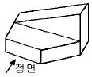
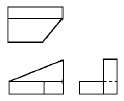
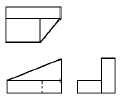
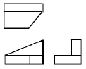
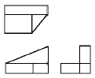
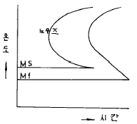

열처리기능사 (2003-01-26 기출문제)
1과목: 임의 구분
1. 내부 변형이 있는 결정립이 내부 변형이 없는 새로운 결정립으로 치환되어 가는 과정은?
- 경화
- 히스테리시스
- 소결
- 재결정
(정답률: 85%)

2. 하나의 원소가 온도에 따라 두가지 이상의 결정 구조를 가지는 경우 각각의 상을 무엇이라 하는가?
- 동소체
- 결정입계
- 천이금속
- 변태입자
(정답률: 64%)
3. 금속의 동소 변태를 설명한 것 중 옳은 것은?
- 특수원소를 첨가하면서 성질이 변화되는 현상이다.
- 퀴리점이 급격히 상승하는 것이다.
- 탄성한도와 인장변형이 변화되는 현상이다.
- 고체상태에서 원자배열의 변화이다.
(정답률: 84%)
4. 가공한 재료를 고온으로 가열했을 때 나타나는 현상으로 옳지 못한 것은?
- 내부 응력의 제거
- 연화
- 재결정
- 결정 입자의 축소
(정답률: 56%)
5. 동일한 조건에서 비중이 가장 무거운 것은?
- Mg
- Aℓ
- Pt
- Na
(정답률: 78%)
6. 재료의 기계적 성질 중 질기고 충격에 잘 견디는 성질은?
- 인성
- 전성
- 연성
- 취성
(정답률: 77%)
7. 철-탄소계 합금 중 상온에서 가장 불안정한 조직은?
- 펄라이트
- 페라이트
- 오스테나이트
- 시멘타이트
(정답률: 58%)
8. 냉간가공에 의하여 금속이 변화하는 성질 중 틀린 것은?
- 인장강도의 증가
- 연신의 감소
- 전기저항의 감소
- 경도의 증가
(정답률: 69%)
9. 일반적인 합금강의 성질이 아닌 것은?
- 강도 및 경도가 커진다.
- 결정입도의 성장을 촉진한다.
- 담금질성을 향상시킨다.
- 내식, 내마멸성을 증대시킨다.
(정답률: 51%)
10. 정밀 기계의 스프링에 사용하는 불변강인 엘린바아 (elinvar)의 주성분이 아닌 것은?
- Cr
- Cu
- Ni
- Fe
(정답률: 53%)
11. 탄소공구강의 재료기호(KS)는?
- SM
- STC
- SKH
- SCM
(정답률: 64%)
12. 18-8 스테인리스강의 첨가 성분으로 맞는 것은?
- Cr - Ni
- W - Cu
- Si - Sn
- Zn - Mg
(정답률: 88%)
13. 산소나 탈산제를 품지 않은 무산소구리는?
- OFHC
- TPC
- ECC
- RHD
(정답률: 58%)
14. 구리 합금에 대한 설명 중 적합하지 않은 것은?
- 7:3 황동은 구리와 주석의 합금이다.
- 황동에는 탈아연 작용이 있다.
- 황동은 주조성이 좋다.
- 양은(German silver)은 니켈이 포함되어 있는 황동 합금이다.
(정답률: 50%)
15. 상온에서 비중이 약 2.7 이며 융점이 660℃ 정도인 금속으로 기계부품, 항공기, 건축, 차량 등에 사용되는 것은?
- Fe
- Pb
- Mg
- Aℓ
(정답률: 69%)
16. 다음 선의 종류 중 굵기가 다른 것은?
- 치수보조선
- 해칭선
- 피치선
- 외형선
(정답률: 73%)
17. 도면에서 치수 숫자와 병행하여 사용하는 기호 중 반지름을 뜻하는 것은?
- C
- P
- R
- t
(정답률: 90%)
18. 도면에서 프리핸드(free hand)로 가는 실선을 불규칙하게 긋는 경우는?
- 부품이 회전하는 것임을 표시할 때
- 표면처리 부분임을 표시할 때
- 대상물의 일부를 파단한 경계를 표시할 때
- 물체의 보이지 않는 부분을 표시할 때
(정답률: 68%)
19. 얇은 판을 가공하여 만든 제품은 전개했을 때의 형상을 평면도에 나타낸다. 이러한 투상도는?
- 보조 투상도
- 전개 투상도
- 요점 투상도
- 회전 투상도
(정답률: 74%)
20. 부품의 표면에 담금질을 하는 등 특수한 가공을 하는 경우 그 부분에 어떤 선을 사용하여 도시하는가?
- 굵은 실선
- 가는 실선
- 가는 1점 쇄선
- 굵은 1점 쇄선
(정답률: 59%)
2과목: 임의 구분
21. 정투상도에서 물체의 높이가 나타나지 않는 도형은?
- 정면도
- 평면도
- 우측면도
- 좌측면도
(정답률: 89%)
22. 그림과 같은 겨냥도를 3각법으로 옳게 투상한 것은?





(정답률: 61%)
23. KS 재료 기호에서 일반적으로 첫째자리 문자가 표시하는 것은?
- 제품명
- 규격명
- 강도
- 재질명
(정답률: 50%)
24. 헐거운 끼워맞춤에서 구멍의 최소허용치수와 축의 최대 허용치수와의 차는?
- 최소 죔새
- 최대 죔새
- 최소 틈새
- 최대 틈새
(정답률: 62%)
25. 나사의 호칭지름은 어느 것으로 나타내는가?
- 수나사의 안지름
- 수나사의 바깥지름
- 암나사의 산지름
- 암나사의 유효지름
(정답률: 65%)
26. 도면의 부품란에 기입되는 사항이 아닌 것은?
- 도면명칭
- 부품번호
- 재질
- 부품수량
(정답률: 61%)
27. 도형을 5 : 1 로 그리는 경우, 치수는 어떻게 기입하는가?
- 실물 치수 그대로 기입한다.
- 실물 치수의 1/5배로 기입한다.
- 실물 치수의 5배로 기입한다.
- 실물 치수의 25배로 기입한다.
(정답률: 42%)
28. 심랭처리의 가장 큰 목적은?
- 구조용강의 연성 증가
- 페라이트 조직의 생성
- 공구강의 경도 증가
- 오스테나이트 조직의 생성
(정답률: 54%)
29. 엷은판 또는 강선과 같이 냉간가공에 의해서 경화된 재료를 연화시키는 열처리로 A1점 이하에서 가열 유지한 후 공냉하는 열처리 방법은?
- Process annealing
- Spheroidizing
- Marquenching
- Water tempering
(정답률: 48%)
30. 강의 질화층 경도 향상에 가장 효과적인 원소는?
- 알루미늄
- 황
- 납
- 탄소
(정답률: 42%)
31. 벨트를 사용하여 연속적으로 다량의 제품을 처리하는데 적합하도록 설계된 열처리로의 형식은?
- 터널형
- 피트형
- 콘베이어형
- 푸셔형
(정답률: 72%)
32. 이상전류 유입시 수초 또는 수분내에 자동적으로 용단되는 일종의 차단기 역할을 하는 것은?
- 바이메탈
- 퓨우즈
- 열전기재료
- 광전관
(정답률: 71%)
33. Ni-Cr강의 담금질 온도(℃)와 냉각액으로 가장 적합한 것은?
- 350∼400, 수돗물
- 450∼500, 소금물
- 550∼650, 증류수
- 820∼880, 기름
(정답률: 40%)
34. 열처리 현장에서 널리 사용되는 분위기로는?
- 소결로
- 전기로
- 가스로
- 용해로
(정답률: 47%)
35. 질산염의 염욕은 몇 ℃이상에서 현저한 산화작용을 하여 제품 및 도가니를 침식하는가?
- 50℃
- 200℃
- 350℃
- 500℃
(정답률: 39%)
36. 상온으로 가공한 스프링강 또는 피아노선등을 250∼370℃로 가열하여 탄성한도나 피로한도를 높이는 처리는?
- 불루잉
- 구상화
- 서브제로
- 액체화
(정답률: 60%)
37. 낙뢰로부터 건조물을 보호하기 위하여 몇 m 이상 건조물이나 위험물 또는 폭발물 저장고에 피뢰침을 설치하는가?
- 0.5
- 2.5
- 6
- 20
(정답률: 47%)
38. 비례 제어식에서 전기로의 전력공급은 조절기의 신호가 온(ON)일 때 몇 % 로 하는가?
- 20
- 40
- 60
- 100
(정답률: 39%)
39. 항온 변태곡선(S곡선)에서 가장 빨리 변태 개시선에 도달하는 구역(이것을 잠복기라 한다)은?

- 펄라이트 변태구역
- Ms직상의 구역
- 노우즈 구역
- Mf 구역
(정답률: 54%)
40. 오스템퍼링 열처리에서 얻어지는 주 조직은?
- 시멘타이트
- 베이나이트
- 솔바이트
- 펄라이트 + 페라이트
(정답률: 68%)
3과목: 임의 구분
41. 기계구조용 탄소강(SM45C)의 담금질온도 및 냉각방법으로 가장 적합한 것은?
- 300∼400℃ 수냉
- 550∼600℃ 공냉
- 830∼880℃ 수냉
- 1000∼1100℃ 유냉
(정답률: 47%)
42. 강을 노내에서 가열할 때 가장 높은 온도에서의 불꽃 색깔은?
- 흰색
- 빨강색
- 암갈색
- 황색
(정답률: 49%)
43. 스테인리스강 시편의 담금질색이 빨강색일 때의 온도는?
- 약 400℃
- 약 480℃
- 약 600℃
- 약 850℃
(정답률: 48%)
44. 강을 담금질할 때 생기며 경도가 높고 무확산 변태를 하는 조직은?
- 페라이트
- 마텐자이트
- 솔바이트
- 오스테나이트
(정답률: 73%)
45. 주철의 열처리에서 연화 풀림의 목적과 관련이 가장 적은 것은?
- 절삭성을 양호하게 한다.
- 강도를 증가시킨다.
- 연성을 향상시킨다.
- 백선부분을 제거시킨다.
(정답률: 47%)
46. 공냉 경화형공구강(STD 12)의 담금질시 경화 온도와 예열 온도의 유지시간은 최대두께 25 mm 당 약 어느정도 인가?
- 1분
- 10분
- 20분
- 60분
(정답률: 51%)
47. 물리적 표면경화법에 속하는 것은?
- 침탄법
- 금속 침투법
- 질화법
- 고주파 경화법
(정답률: 57%)
48. 기름을 오스템퍼링용 냉각제로 사용하지 않는 가장 큰 이유는?
- 열을 급속히 전달한다.
- 증기를 발생한다.
- 급냉되기 때문이다.
- 오스템퍼링 온도에서 점성이 변한다.
(정답률: 50%)
49. 장비가 위치한 실내의 환기에 가장 주의 해야 하는 열처리 로는?
- 균열로
- 가스로
- 수냉로
- 유도로
(정답률: 83%)
50. 기어 표면의 높은 경도와 내마모, 중심부의 강인성을 주기 위해 침탄 열처리 하고저 할 때 적합한 강종은?
- SNCM 220
- STD 11
- STS 3
- FCD 60
(정답률: 36%)
51. 고주파 경화법의 장점이 아닌 것은?
- 국부적인 경화에 이용 할 수 있다.
- 피로강도가 저하된다.
- 가열 시간이 짧다.
- 변형이 적다.
(정답률: 71%)
52. 청백색의 고체금속으로서 베어링용 합금, 반도체 제조등에 쓰이며 이타이이타이병이라는 직업병을 일으키는 금속은?
- Hg
- Cr
- Pb
- Cd
(정답률: 53%)
53. 액체 침탄법의 이점이 아닌 것은?
- 제품의 변형을 방지할 수 있다.
- 온도 조절이 용이하다.
- 가공 시간이 절약된다.
- 침탄제의 가격이 아주 싸다.
(정답률: 56%)
54. 열처리할 부품 표면에 있는 기름 성분을 제거하는 전처리는?
- 산세
- 연삭
- 탈지
- 연마
(정답률: 69%)
55. 열처리 제품의 표면을 쇼트 피이닝(Shot peening)처리할 때 효과나 목적이 아닌 것은?
- 금속의 표면층을 경화시킨다.
- 경강 등의 충격파괴 저항이 상승한다.
- 연강 등의 저온취성 온도를 강화시켜 안전하게 한다.
- 철구(shot)는 제품보다 반드시 경도가 낮아야 한다.
(정답률: 58%)
56. 고속도강의 열처리에 알맞는 염욕은?
- 저온용 염욕
- 중온용 염욕
- 고온용 염욕
- 저온용과 중온용의 염욕
(정답률: 65%)
57. 열전대에 쓰이는 재료의 설명이 옳지 않은 것은?
- 내열, 내식성이 좋아야 한다.
- 고온에서도 기계적 강도가 커야 한다.
- 열기전력이 작고 호환성이 없어야 한다.
- 히스테리시스 차가 없어야 한다.
(정답률: 54%)
58. 펄라이트 형성 온도보다는 낮고 마텐자이트 형성 온도보다는 높은 온도에서 행하는 철계합금의 항온 변태 열처리는?
- 마템퍼링
- 마퀜칭
- 오스템퍼링
- 뜨임메짐
(정답률: 38%)
59. 공구강의 열처리시 고려할 사항으로 틀린 것은?
- 담금질 후에 구상화풀림을 한다.
- 급냉으로 인한 변형을 적게한다.
- 담금질 후 뜨임 처리한다.
- 담금질과 뜨임 후 시효 변화가 적어야 한다.
(정답률: 48%)
60. 18-8 스테인리스강의 기본적인 열처리로 냉간가공 또는 용접에 의해 생긴 내부응력을 제거하고 내식성을 증가 시키는 열처리는?
- 고용화 처리
- 구상화 처리
- 흑연화 풀림
- 프로세스 어닐링
(정답률: 49%)